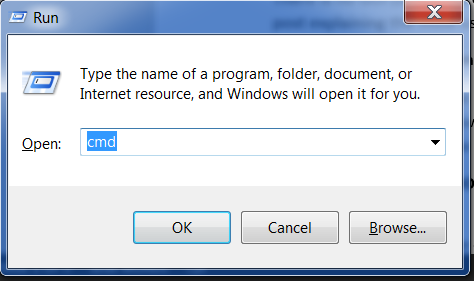

Vamos começar com o Python
Finalmente chegamos aqui!
Mas primeiro, vamos contar o que é Python. Python é uma linguagem de programação muito popular que pode ser usada para criar sites, jogos, software científicos, gráficos e muito, muito mais.
O Python foi criado na década de 1980 e seu principal objetivo é ser legível por seres humanos (e não apenas pelas máquinas!). Por isso ele parece mais simples que outras linguagens de programação, mas não se preocupe - o Python também é muito poderoso!
Instalação do Python
Observação: Se você está usando um Chromebook, pule este capítulo e certifique-se de seguir as instruções para Configuração do Chromebook.
Observação: Se você já passou pelas etapas de Instalação, não precisa fazer isso novamente -- pode seguir em frente e ir para o próximo capítulo!
Para leitoras em casa: esse capítulo é aboradado no vídeo Instalando Python & Editor de Código.
Esta seção baseia-se em tutoriais da Geek Girls Carrots (https://github.com/ggcarrots/django-carrots)
Django é escrito em Python. Precisamos dele para fazer qualquer coisa no Django. Por isso, vamos começar instalando o Python! Nós precisamos que você instale o Python 3.6. Se você tiver alguma versão mais antiga, é preciso atualizá-la.
Primeiro, verifique se o computador está executando a versão 32-bit ou a versão 64-bit do Windows. Faça isso pressionando a tecla do windows no seu teclado (aquela com a janela do windows) + a tecla Pause/Break. Feito isso, uma tela abrirá com as informações do seu windows. Nessa tela, verifique a seção "Tipo de sistema" e confira que versão está sendo executada. Você pode baixar o Python para Windows no website https://www.python.org/downloads/windows/. Clique no link: "Versão Mais Recente Python 3 - Python x.x.x". Se seu computador está executando a versão 64-bit do windows, baixe o instalador executável do Windows x86-64. Caso contrário, baixe o instalador executável x86 do Windows. Depois de baixar o instalador, você precisa executá-lo (dando um duplo-clique nele) e seguir as instruções.
Existe uma coisa com a qual você precisa ter cuidado: durante a instalação, você verá uma janela marcada como "Setup". Certifique-se de selecionar a caixa "Adicionar Python 3.6 ao CAMINHO" e clique em "Instalar agora", conforme mostrado aqui:

Nas próximas etapas, você usará a linha de comando do Windows (vamos te explicar tudo sobre isso também). Por enquanto, se você precisa digitar alguns comandos, vá ao menu iniciar e digite "Command Prompt" no campo de busca. (Em versões mais antigas do Windows, é possível iniciar a linha de comando com Start menu → Sistema do Windows → Prompt de comando.) Você também pode segurar a tecla windows + "R" até aparecer a janela "Executar". Para abrir a Linha de Comando, digite "cmd" e pressione enter na janela "Executar".

<0>Observação: se você estiver usando uma versão antiga do Windows (7, Vista, ou qualquer outra mais antiga) e o instalador do 3.6. x Python falhar com um erro, você pode tentar:
- instalar todas as atualizações do Windows e tentar instalar o Python 3.6 novamente; ou
- instalar uma versão mais antiga do Python, por exemplo, 3.4.6.
Se você instalar uma versão mais antiga do Python, a tela de instalação pode parecer um pouco diferente da mostrada acima. Certifique-se de rolar até ver a opção "Add python.exe to Path", então clique no botão à esquerda e escolha "Will be installed on local hard drive":

Observação: Antes de instalar o Python no Mac OS X, você deve garantir que suas configurações permitam a instalação de pacotes que não estejam na App Store. Vá para preferências do sistema (dentro da pasta Aplicativos), clique em "Segurança & Privacidade" e depois na guia "Geral". Se a configuração "Permitir que apps baixados:" estiver definida como "Mac App Store," mude para "Mac App Store e desenvolvedores identificados."
Você precisa visitar https://www.python.org/downloads/release/python-361/ e baixar o instalador do Python:
- Faça o download do arquivo Mac OS X 64-bit/32-bit installer,
- Dê um duplo clique no arquivo python-3.6.1-macosx10.6.pkg para executar o instalador.
É muito provável que você já tenha o Python instalado e configurado. Para ter certeza se ele está instalado (e qual a sua versão), abra o terminal e digite o seguinte comando:
command-line
$ python3 --version
Python 3.6.1
Se você tem instalada uma outra "versão micro" do Python, por exemplo, 3.6.0, você não precisa atualizá-la. Se você não tiver o Python instalado ou quiser uma versão diferente, faça assim:
Verifique se a instalação foi bem sucedida abrindo o terminal e digitando o comando python3:
command-line
$ python3 --version
Python 3.6.1
Observação: Se você estiver no Windows e receber uma mensagem de erro dizendo queo python3 não foi encontrado, tente utilizar python (sem o 3) e verifique se ela corresponde à versão Python 3.6.
Se você tem alguma dúvida ou se alguma coisa deu errado e você não tem a menor ideia do que fazer, pergunte à sua monitora! Nem sempre tudo sai conforme o esperado e é melhor pedir ajuda a alguém mais experiente.